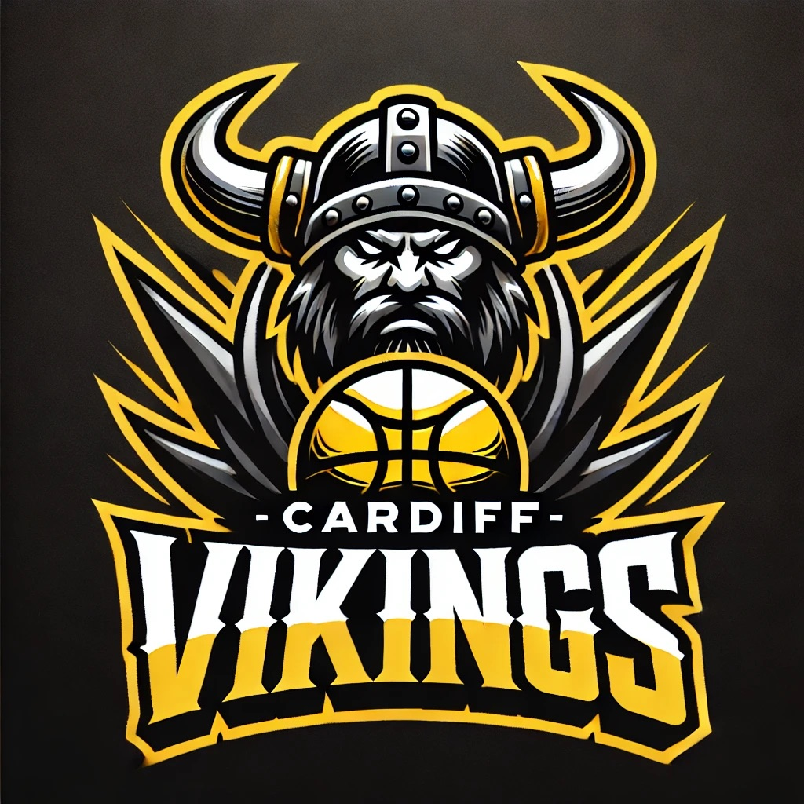

Squash Dissertation: Rally Intensity
Research into rally intensity, player profiling, and how performance indicators relate to outcome and ranking.
Open Project
Portfolio
Browse work by sport or by the kind of analysis involved. The filter now works properly, so it is easier to find the projects most relevant to you.
Research into rally intensity, player profiling, and how performance indicators relate to outcome and ranking.
Open Project
Visual summaries from academy analysis work, with space ready for the full report.
Open Project
Set-piece analysis support and tagging workflows for senior football performance environments.
Open Project
Performance support, coaching, and operational leadership within a growing basketball programme.
Open ProjectResearch support through event tagging and structured video review.
Open ProjectCompetition review and insight delivery for elite taekwondo performance.
Open ProjectAcademy-focused performance and opposition analysis support.
Open ProjectVideo review processes and performance breakdowns adapted for cricket environments.
Open ProjectApplied match review and feedback support in netball performance settings.
Open ProjectCoaching and analysis support across a university basketball programme.
Open Project